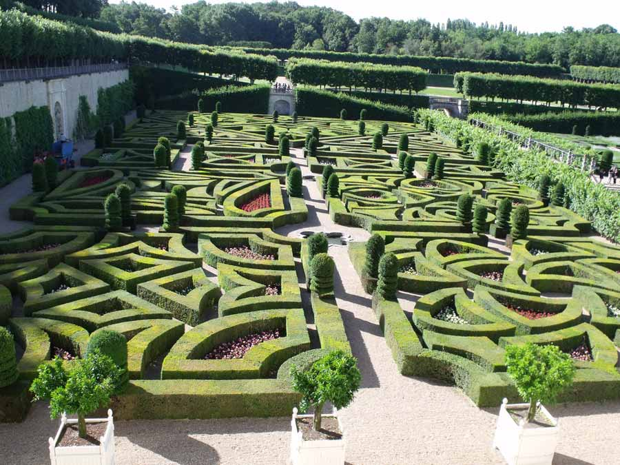
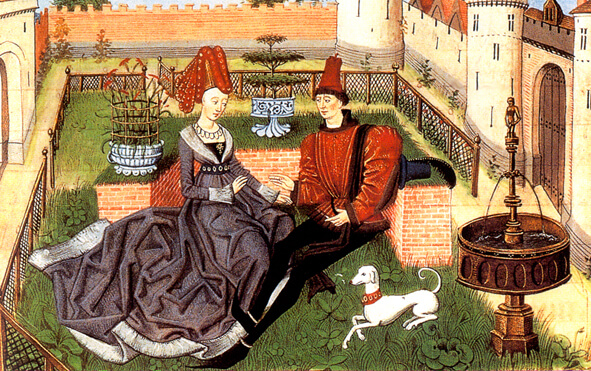

Jardines históricos
El Jardin Inglés

El jardin inglés o paisajista lo caracteriza las formas abundantes y desdibujadas sin acciones invasivas, destacando el conjunto
10/12/2016, 19:34
El Jardín Renacentista

El jardín renacentista o italiano fuertemente influido por la arquitectura, muestra una gran pretensión de dominación de la naturaleza, la poda en su forma límite para servir a la idea artística
11/11/2016, 20:15
El Jardín Medieval

El jardín medieval es cuatripartito, interior, sin abundancia y mucho menos recargado de agua, caidas, pérgolas. A la manera romana, es funcional para el uso doméstico, culinario, medicinal, era introspectivo y su objetivo principalmente era dar reposo y ser un lugar de encuentro.
09/10/2016, 17:15